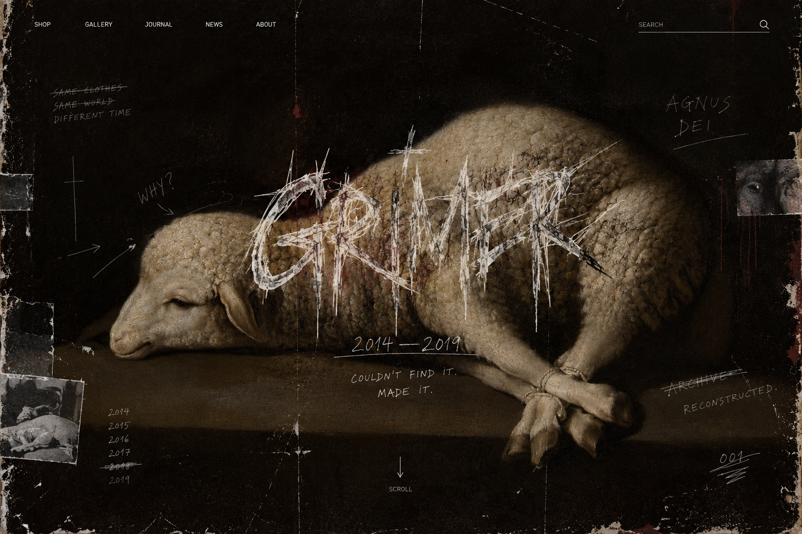

05.10.2026
WHY DO WE STILL
WANT THINGS FROM 2016?
Maybe because some things felt unfinished. GRIMER is interested in that feeling — not nostalgia, but reconstruction.
READ →
GRIMER / 001
Streetwear reconstructed from the visual language of 2014—2019, seen from now.
05.10.2026
Maybe because some things felt unfinished. GRIMER is interested in that feeling — not nostalgia, but reconstruction.
READ →SHOP
First collection is being reconstructed.
GRIMER is a streetwear project built around things we couldn't find. The past is a source, not an instruction.
2014—2019 / RECONSTRUCTED
© GRIMER